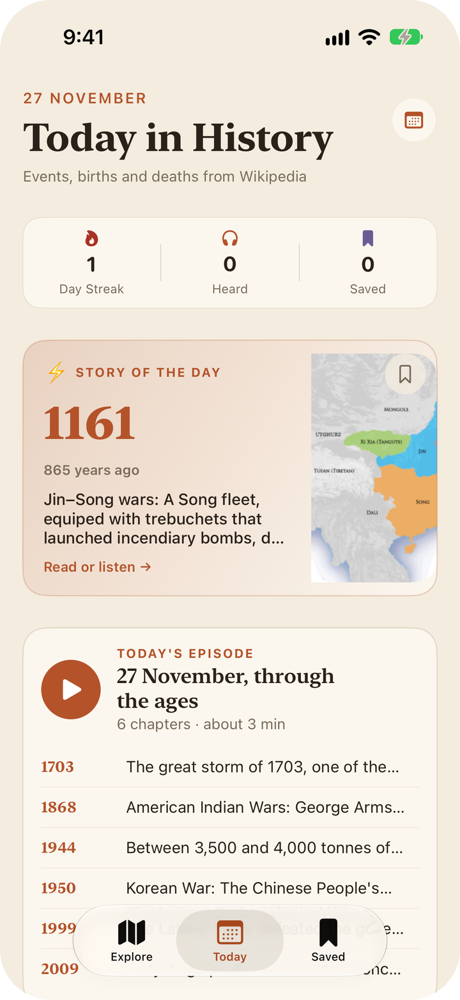
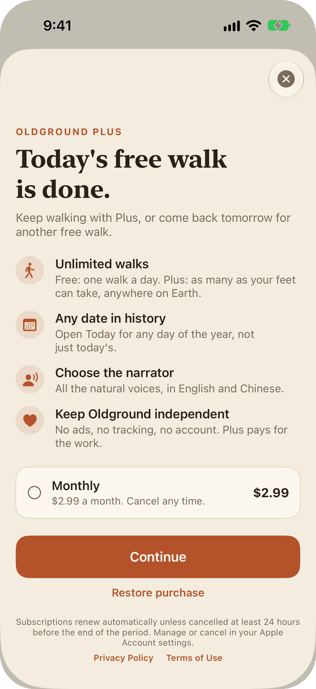

An audio guide to the past, anywhere
Drop a pin anywhere on Earth. Oldground finds the battles, fires, churches and lost buildings that happened right there and reads them to you, like a guide walking beside you.
How it works
Explore
Move the map, let the pin fall, and the circle fills with the history inside it: battles, disasters, churches, landmarks, each with its year and how many years ago that was. Spin the globe to land in Rome, Kyoto or Cusco.
Walk
Start the walk and the best stories nearby become stops, in walking order. Swipe up for the next one; the narrator follows your swipes and the page follows the narrator. Distance and direction to every stop, and it keeps playing with the screen locked.
Today
Six moments from this day in history, oldest first, read as one episode with chapters you can jump between. Then the newest articles from history magazines, read aloud on request.

Listen deeper
Every story offers podcast episodes about it, played right in the app, so a two-minute stop can turn into an hour if you want it to.

Oldground Plus
The map, one walk a day, today's episode, podcasts and listening to any single story are free, with no ads, no tracking and no account. Plus adds unlimited walks, any date of the year in Today, and your choice of narrator voices in English and Chinese.
Prices in US dollars; they vary by country. Subscriptions renew unless cancelled 24 hours before the period ends.
17 languages
Pick a story language in Settings, or let it follow your phone. The natural voice reads English and Chinese; other languages use your iPhone's best voice.
English · 简体中文 · 繁體中文 · 日本語 · 한국어 · العربية · Deutsch · Español · Français · Italiano · Português (Brasil) · Nederlands · Svenska · Română · Türkçe · עברית · Bahasa Melayu
Privacy
Your location is used on the phone to find what's near you and is never sent to us. Stories come straight from Wikipedia and Wikidata. The natural voice runs on the iPhone itself after a one-time download of about 165 MB.
Yes. The map, one walk a day, today's episode, podcast episodes and listening to any single story are free. Oldground Plus adds unlimited walks, any date and all narrator voices: $2.99 a month, $14.99 a year with a 7-day free trial, or $29.99 once.
From Wikipedia and Wikidata under the CC BY-SA licence. Every story links to its article, so you can read on.
The voice does: after a one-time download it runs entirely on your iPhone. Stories are fetched from Wikipedia, so you need a connection to load a new area; stories already loaded keep playing.
Oldground shows what Wikipedia has placed on the map, which is richer in some cities than others. If an article is wrong, fixing it on Wikipedia fixes it here too.
Email bestappsclub@gmail.com.